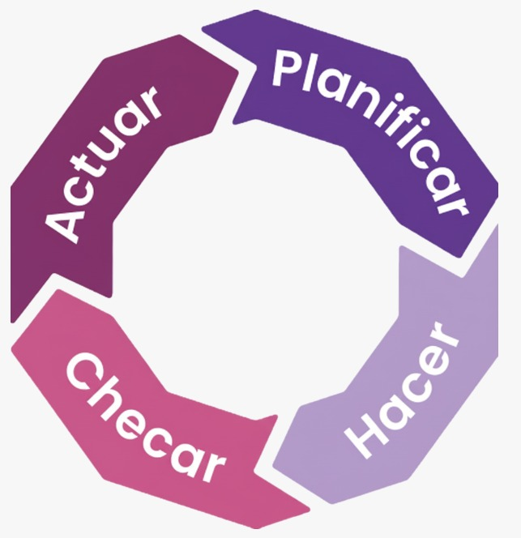

- Herramientas de gestión de pruebas
Son aplicaciones que ayudan a planificar, organizar y controlar todo el proceso de pruebas de software.
Funciones principales:
- Crear planes y casos de prueba.
- Asignar pruebas a los testers.
- Registrar resultados de ejecución.
- Generar reportes y métricas de pruebas.
Ejemplos populares:
- TestRail: Gestión de pruebas, integración con Jira y reportes detallados.
- Zephyr: Integración con Jira, planificación y ejecución de pruebas.
- qTest: Gestión de pruebas, automatización y seguimiento de resultados.
- Herramientas de seguimiento de defectos (Bug Tracking)
Se utilizan para registrar, rastrear y gestionar errores detectados durante las pruebas.
Funciones principales:
- Registrar detalles del defecto (tipo, severidad, prioridad).
- Asignar errores a desarrolladores para corrección.
- Hacer seguimiento del estado del defecto (abierto, en proceso, cerrado).
- Generar métricas sobre defectos (cantidad, severidad, tiempo de resolución).
Ejemplos populares:
- Jira: Seguimiento de incidencias y gestión ágil de proyectos.
- Bugzilla: Registro y seguimiento de bugs con historial detallado.
- Redmine: Gestión de proyectos y seguimiento de defectos.
- Herramientas de análisis de calidad
- Analizar código fuente (estilo, complejidad, duplicación).
- Medir métricas de calidad (mantenibilidad, cobertura de pruebas, vulnerabilidades).
- Generar reportes y alertas de problemas potenciales.
- SonarQube: Evaluación continua de código, detección de bugs y vulnerabilidades.
- Coverity: Análisis estático de código para encontrar defectos críticos.
- CAST Software: Análisis de arquitectura y métricas de calidad.
Permiten evaluar la calidad del software y el código mediante métricas y reportes automáticos.
Funciones principales:
Ejemplos populares: